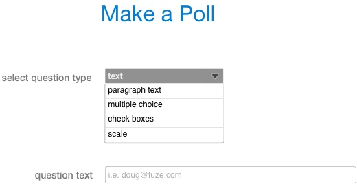

<map name="GraffleExport">
	<area shape=poly coords="308,108,311,113,313,113,313,113,317,108,317,107,316,107,308,107,307,108,308,108,308,108" href="poll_1.html">
	<area shape=rect coords="152,99,324,120" href="poll_1.html">
	<area shape=poly coords="308,108,311,113,313,113,313,113,317,108,317,107,316,107,308,107,307,108,308,108,308,108" href="poll_2.html">
	<area shape=rect coords="152,99,324,120" href="poll_2.html">
</map>

